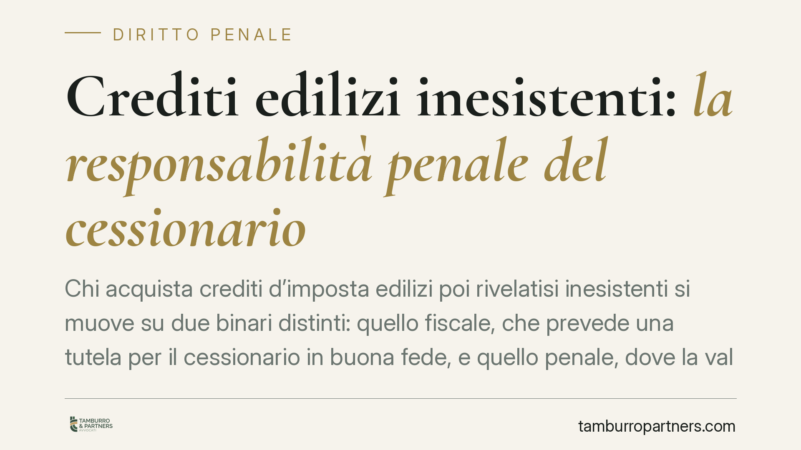

Crediti edilizi inesistenti: la responsabilità penale del cessionario
Chi acquista crediti d'imposta edilizi poi rivelatisi inesistenti si muove su due binari distinti: quello fiscale, che prevede una tutela per il cessionario in buona fede, e quello penale, dove la valutazione segue regole proprie. La differenza non è teorica: incide sul rischio di sequestro del credito e sulla posizione processuale di banche e intermediari.

Il doppio binario: fiscale e penale
Il tema nasce dalla cessione dei crediti d'imposta legati ai bonus edilizi, disciplinata dall'art. 121 del D.L. 34/2020. Sul piano tributario, la normativa delinea un'area di tutela per il cessionario: in sintesi, chi acquista il credito con la dovuta diligenza non risponde in solido per la quota corrispondente al credito oggetto di contestazione, salvo il caso di dolo o colpa grave (il cosiddetto *safe harbour*, letteralmente "porto sicuro").
Questo meccanismo opera però sul versante fiscale. Il versante penale segue logiche autonome e non recepisce in modo automatico le valutazioni di diligenza elaborate per il recupero tributario. È qui che si annida l'equivoco più frequente: ritenere che l'assenza di responsabilità fiscale metta al riparo anche dal procedimento penale.
Inquadramento normativo
Le fattispecie penali potenzialmente rilevanti sono diverse. La creazione fittizia di crediti e il loro utilizzo possono essere ricondotti, a seconda delle modalità e dei soggetti coinvolti, agli artt. 640 e 640-bis c.p. (truffa e truffa aggravata per il conseguimento di erogazioni pubbliche), all'art. 316-ter c.p. (indebita percezione di erogazioni a danno dello Stato) e all'art. 10-quater del D.Lgs. 74/2000 (indebita compensazione).
La qualificazione concreta dipende dalla ricostruzione del fatto e dal ruolo attribuito a ciascun soggetto nella filiera. Non esiste, allo stato, un principio generale e consolidato — tanto meno reso dalle Sezioni Unite penali — che qualifichi in via astratta la fabbricazione dei crediti edilizi come truffa aggravata valida per ogni ipotesi. Si tratta di inquadramenti che vanno verificati caso per caso sulla base delle pronunce effettivamente intervenute, da esaminare nei loro estremi (sezione, numero e anno).
L'elemento soggettivo del cessionario
Nel processo penale vige la presunzione di innocenza (art. 27, comma 2, Cost.) e l'onere di provare il dolo grava sull'accusa. Non sono ammesse presunzioni di colpevolezza a carico dell'imputato né inversioni dell'onere della prova sull'elemento soggettivo.
Ciò premesso, alcune pronunce della Cassazione penale hanno chiarito un punto rilevante per il cessionario: la diligenza richiesta ai fini fiscali non esclude di per sé la configurabilità del dolo. In altri termini, l'aver rispettato gli standard istruttori previsti sul piano tributario non equivale automaticamente a un'esimente penale. Nel giudizio sul dolo vengono valorizzati gli *indici di anomalia* dell'operazione e gli elementi che possono rivelare la consapevolezza, da parte del cessionario, dell'inesistenza del credito acquistato: prezzi fuori mercato, documentazione incompleta, catene di cessione opache, operatività in settori già segnalati come a rischio.
Implicazioni pratiche per banche e intermediari
Il rischio più concreto, per il cessionario, non è soltanto quello della contestazione personale. È il sequestro preventivo del credito presso di sé, anche quando il cessionario non sia l'autore della condotta originaria. In sede cautelare reale, il credito può essere aggredito in quanto profitto o prodotto del reato, con effetti immediati sul patrimonio e sulla possibilità di utilizzarlo in compensazione.
Per banche e intermediari finanziari questo significa che la sola conformità alle procedure fiscali di acquisto non neutralizza l'esposizione penale. La qualità dell'istruttoria svolta al momento dell'acquisto diventa, piuttosto, un elemento di prova: documenta il grado di consapevolezza e la ragionevolezza delle verifiche effettuate.
Cosa fare in concreto
- Tracciare l'istruttoria di acquisto. Conservare in modo ordinato e datato tutta la documentazione delle verifiche svolte prima della cessione, così da poter ricostruire a posteriori il livello di diligenza adottato.
- Mappare l'esposizione sui crediti già in portafoglio. Individuare le posizioni acquisite da filiere o soggetti successivamente attinti da contestazioni, per stimare il perimetro di rischio.
- Verificare gli estremi delle pronunce rilevanti. Prima di assumere decisioni, accertare numero, sezione e anno delle sentenze applicabili alla specifica fattispecie, senza affidarsi a formule generiche.
- Integrare la difesa fiscale e quella penale. Coordinare le linee di risposta sui due binari: una posizione presa in sede tributaria può avere effetti nel procedimento penale, e viceversa.
- Presidiare la fase cautelare. In presenza di un sequestro preventivo del credito è opportuno valutare tempestivamente gli strumenti di riesame e le possibili istanze, data l'incidenza immediata sul patrimonio.
Conclusione
Il quadro resta in evoluzione e richiede prudenza interpretativa. La distanza tra la tutela fiscale del cessionario diligente e la valutazione penale dell'operazione è reale: ignorarla espone a conseguenze che il solo adempimento tributario non è in grado di prevenire.
Ogni condominio ha una storia a sé.
Se gestisci un'amministrazione e vuoi un confronto su una specifica questione condominiale, scrivi allo studio. Ti rispondiamo entro un giorno lavorativo.